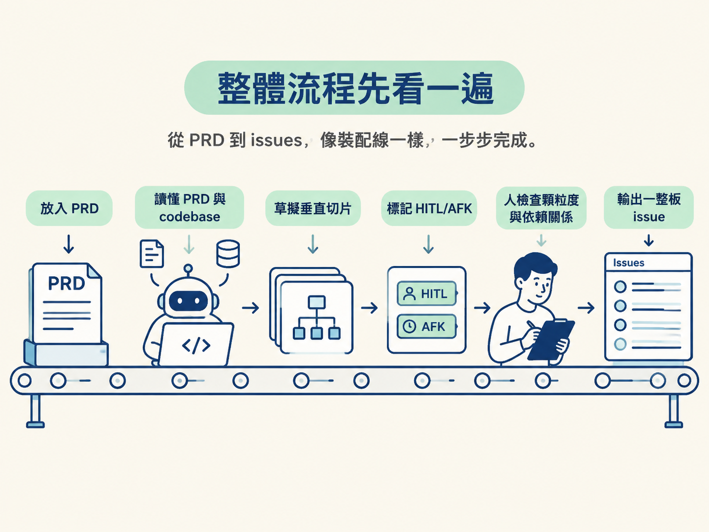
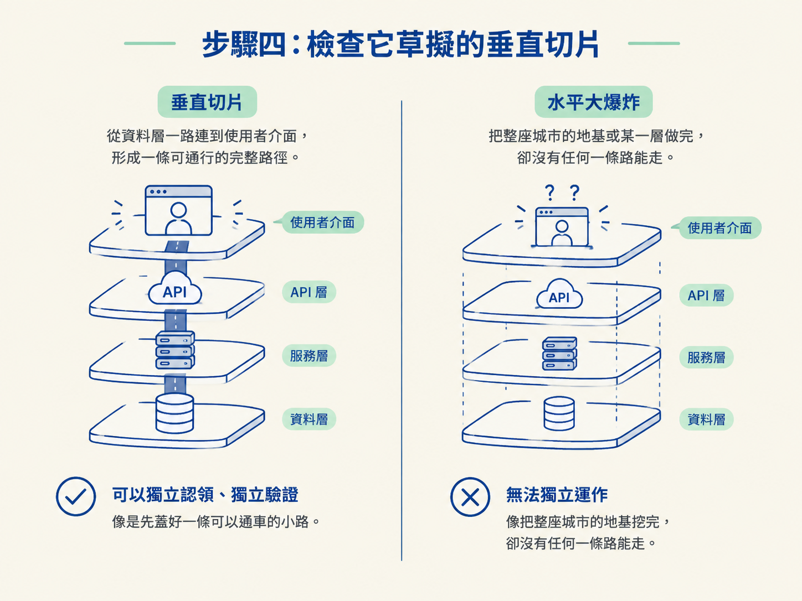
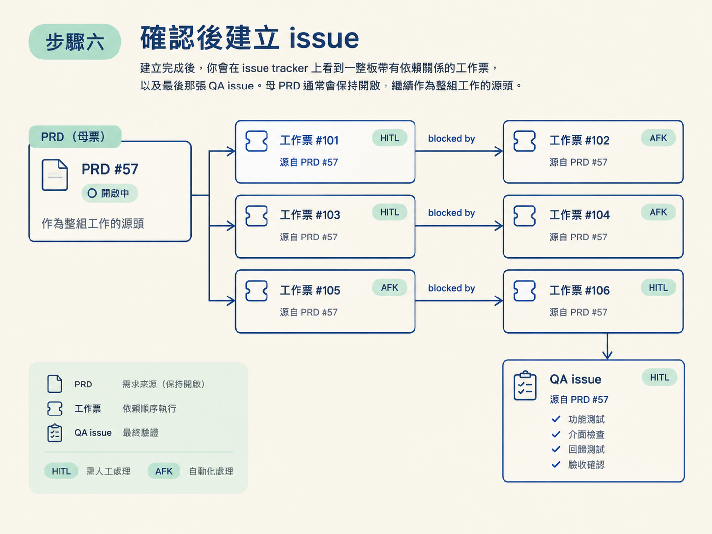

照著本節操作，你會把一份 PRD 轉成一整板 issue：每張票都能追溯回母 PRD，彼此用 blocked by 標示依賴，也會標上 HITL 或 AFK，最後再附上一張 QA checklist issue，留給人做最後驗收。
整個流程不複雜，但以下條件少一項，執行到中途就可能卡住。
gh，並使用一組範圍夠窄的 token。PRD to issues，需要先提供一份 PRD；作者自己的 repo 使用 to issues，可以直接讀取對話 context 裡的內容，也可以抓取指定的 issue。你可以把這個流程想成一條裝配線：先把 PRD 放到 agent 拿得到的位置，再讓它讀懂 PRD 和 codebase，接著草擬垂直切片、標記 HITL/AFK，最後由你檢查顆粒度與依賴關係。只有你確認後，skill 才會真的建立 issue。

先把需求從筆記或 gist 搬進 issue tracker。開一張新 issue，貼上 PRD 全文。有了這個編號，PRD 就變成 agent 抓得到、也引用得到的固定來源。
貼完後記下 issue 編號。以下用 57 作為例子。
回到 agent，將 PRD 的編號傳進去：
PRD to issues 57收到編號後，skill 會先到 issue tracker 找出 #57，抓取它的完整內容和所有留言。這樣做可以確保後續切片是根據完整 PRD，而不是只看一段摘要。
如果你使用的是 to issues 版本，而且沒有帶參數，它會改讀目前對話 context 裡已經存在的內容。也因此，PRD 必須先放到它讀得到的地方：不是 issue，就是對話 context。
讀完 PRD 後，skill 會判斷自己是否已經了解這個 codebase。
這一步不用重讀整個專案，只要先確認需求該接在哪些現有結構上。少了這層現況，切片很容易變成看起來漂亮、實際上接不起來的票。
掌握 PRD 和 codebase 後，skill 會把需求拆成一張張可以獨立認領、又能追溯回母 PRD 的 issue。
這裡要檢查的重點是垂直切片。每一張切片都應該盡量從資料層一路連到使用者看得到的介面，而不是先把所有資料表做完，再做所有 API，最後才處理畫面。前者像是先蓋好一條可以通車的小路；後者則像把整座城市的地基挖完，卻還沒有任何一條路能走。

同時檢查每張票的 HITL/AFK 標記：
skill 會盡量把工作往 AFK 靠，因為只有這些才交得了自走迴圈。
無論最後切出幾張工作票，skill 都會再補上一張固定的 QA issue，裡面放詳細的手動 QA 計畫。
QA issue 是整組工作的收尾。它會把需要人親自驗證的項目列成清單，讓 agent 完成前面的 AFK 工作後停下來，等你回來逐項檢查。
票真正建立之前，skill 會把整份提案攤開，請你確認幾個關鍵問題：
這一步不要直接跳過，因為切片的顆粒與方向需要人的判斷。尤其要先檢查第一張票：它應該是一個合格的 tracer bullet，也就是一條從資料到畫面的最小完整路徑，而不是只把某一層一次做到最底的「水平大爆炸」。
若發現兩張票薄到單獨執行不划算，就在這裡把它們合併；若一張票大到無法清楚驗證，就把它拆開。
你確認提案後，skill 才會開始建立票。每張票都應該使用同一個模板，至少保留以下兩項資訊：
blocked by 段落。清楚寫明這張票被哪些票擋住，例如「blocked by #58」。之後這些票會整批餵給 Ralph，Ralph 只看票面資訊，就能判斷哪些工作需要先完成。建立完成後，你會在 issue tracker 上看到一整板帶有依賴關係的工作票，以及最後那張 QA issue。母 PRD 通常會保持開啟，繼續作為整組工作的源頭。

票建立後，回頭調整 AFK 迴圈 Ralph 的 prompt。至少要加入兩項規則：
no more tasks。這樣一來，迴圈會自動避開需要你判斷的工作；完成可自動處理的票後，也會自行停下來。
如果你不想只依賴 prompt 的文字約束，可以再加一道機制上的保護：
prompt 是軟性約束，多數情況下已經夠用；但如果某些票絕對不能讓它自己亂跑，就該優先靠這類機制擋住。
這一輪完成時，你應該會看到以下結果：
blocked by 依賴關係。no more tasks。這一板票就是接下來提供給 AFK 迴圈的工作佇列。至於為什麼要使用垂直切片，以及為什麼要把需要品味的工作標成 HITL，原理已在相鄰章節說明；本節就是把這些東西實際生出來，確認可以執行。
下一節會把這板票交給 AFK 迴圈執行，再由人依照 QA 清單完成驗收。
PRD-to-issues 的操作順序是：把 PRD 貼成 issue、記下編號、呼叫 skill、讓它讀懂 PRD 與 codebase、草擬垂直切片並標記 HITL/AFK、固定附上一張 QA issue、檢查顆粒度與依賴關係，確認後用「引用母 PRD + blocked by」的模板建立 issue，最後把 Ralph prompt 調整成只處理 AFK 工作。